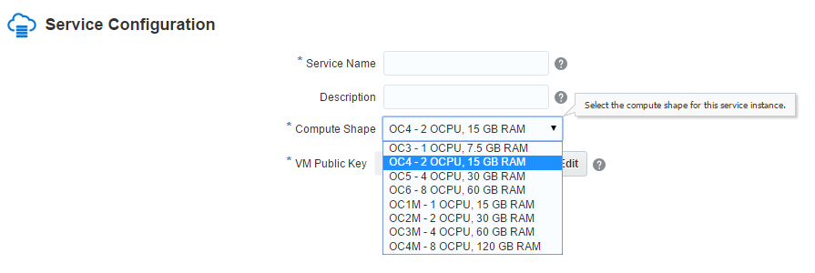

|
|
This was first published on https://blog.dbi-services.com/database-cloud-service-performance-cpu (2015-08-30)
Republishing here for new followers. The content is related to the the versions available at the publication date
In the previous blog post I’ve measured the physical i/o performance, with SLOB.
We can run the same with a small size of data and a large buffer cache in order to measure logical reads (LIOs) and CPU performance.
Except if you are licenced in NUP, you are already used to pay the Oracle database usage per CPU. The processor metric is socket for Standard Edition, or cores (with a core factor) for Enterprise Edition. And you pay for the processors you have physically, except for the hypervisors where Oracle accepts to count the vCPUs.
In the Cloud, you’re on Oracle VM where hard partitioning is accepted. Pricing is done on virtual CPU – called ‘OCPU’.
When you create a new service in the Database Cloud Services, you choose the ‘compute shape’ you want: 
The definition of OCU is: OCPU is defined as the CPU capacity equivalent of one physical core of an Intel Xeon processor with hyper threading enabled. And you pay the Database Cloud Services per OCP (see pricing list). Here I’ve chosen 2 OCPU which means that I have 4 threads.
I’ve already posted the details of lscpu and /proc/cpuinfo in a previous post.
Basically we have 4 threads from Intel Xeon E5-2690 v2 (3GHz) cores. So it looks like we have Sun Server X4-2 behind. It’s virtualized with Xen, So probably OVM (Twitter discussion about it: https://twitter.com/OracleSK/status/636544116483072000)
Let’s run the cached SLOB at it and compare it with a physical machine with same E5-2690 v2. I’ve set a large buffer cache, and small SLOB scale (but large enough because I don’t want to be in cpu cache).
[oracle@test-perf SLOB]$ sh runit.sh 1 NOTIFY : 2015.08.30-11:38:48 : NOTIFY : 2015.08.30-11:38:48 : Conducting SLOB pre-test checks. UPDATE_PCT: 0 RUN_TIME: 600 WORK_LOOP: 0 SCALE: 500M (64000 blocks) WORK_UNIT: 64 REDO_STRESS: LITE HOT_SCHEMA_FREQUENCY: 0 DO_HOTSPOT: FALSE HOTSPOT_MB: 8 HOTSPOT_OFFSET_MB: 16 HOTSPOT_FREQUENCY: 3 THINK_TM_FREQUENCY: 0 THINK_TM_MIN: .1 THINK_TM_MAX: .5 ... NOTIFY : 2015.08.30-11:49:07 : SLOB test is complete.
In the AWR report I check that I’m doing only logical reads:
Instance Efficiency Percentages (Target 100%)
~~~~~~~~~~~~~~~~~~~~~~~~~~~~~~~~~~~~~~~~~~~~~
Buffer Nowait %: 100.00 Redo NoWait %: 100.00
Buffer Hit %: 100.00 In-memory Sort %: 100.00
Library Hit %: 100.00 Soft Parse %: 99.66
Execute to Parse %: 99.98 Latch Hit %: 100.00
Parse CPU to Parse Elapsd %: 100.00 % Non-Parse CPU: 99.99
Flash Cache Hit %: 0.00
Well, this it is probably the only case where I check the ‘buffer cache hit ratio’ in an AWR report…
Then here are the LIOPS – logical reads per second:
Load Profile Per Second Per Transaction Per Exec Per Call
~~~~~~~~~~~~~~~ --------------- --------------- --------- ---------
DB Time(s): 1.0 17.7 0.00 5.78
DB CPU(s): 1.0 17.6 0.00 5.74
Background CPU(s): 0.0 0.1 0.00 0.00
Redo size (bytes): 4,274.4 75,644.6
Logical read (blocks): 595,168.5 10,532,749.6
Block changes: 16.5 292.8
Physical read (blocks): 0.1 2.1
Physical write (blocks): 1.0 18.3
Read IO requests: 0.1 2.1
Write IO requests: 0.5 9.1
Read IO (MB): 0.0 0.0
Write IO (MB): 0.0 0.1
IM scan rows: 0.0 0.0
Session Logical Read IM:
User calls: 0.2 3.1
Parses (SQL): 2.0 34.4
Hard parses (SQL): 0.0 0.1
SQL Work Area (MB): 0.1 0.8
Logons: 0.1 1.2
Executes (SQL): 9,002.4 159,315.5
Rollbacks: 0.0 0.0
Transactions: 0.1
DB CPU usage is 1 second per second, which is what I want: I’ve run SLOB on one thread only, and all in CPU.
So I can do 595168 LIOPS with one thread on that platform.
Let’s compare with a physical server with same E5-2690 v2 (https://twitter.com/kevinclosson/status/636905086338342913)
This is good. I’ve no overhead (less than 0.5%) from being virtualized, and in the cloud, here.
Since Linux 2.6.11 (and we are here in OEL 6.4 – Linux 2.6.39), virtual CPU time accounting counts the time where process is on vCPU but waiting for physical CPU to be scheduled by the hypervisor. It’s an idle time displayed ‘steal’ time:
11:00:01 AM CPU %user %nice %system %iowait %steal %idle 11:10:01 AM all 0.74 0.00 0.35 0.10 0.04 98.77 11:20:01 AM all 0.21 0.00 0.33 0.08 0.03 99.35 11:30:01 AM all 1.24 0.00 0.49 0.12 0.04 98.12 11:40:01 AM all 13.17 0.00 1.66 0.13 0.02 85.01 11:50:01 AM all 20.72 0.00 2.36 0.09 0.01 76.82 12:00:01 PM all 0.20 0.00 0.32 0.09 0.04 99.34
Note that %iowait + %steal + %idle are all idle time. They detail on why it is idle (uninterruptible system call, wait for physical CPU, voluntary idle)
The Oracle Cloud Services are probably not very busy yet, but even in the future, I don’t expect to see that %steal increasing because we pay for the allocated OCPU.
On a physical server, if I’ve 2 hyper-threaded cores, I expect to be able to run 2 processes with this LIO rate. Each process running on one core. If I run 4 processes, then the LIO rate will not double because hyperthreading don’t double the power of one core. It depends on the workload (time spend by one thread accessing RAM can be used by the other thread to process cpu).
From above, the LIO rate of one thread in my 2 OCPU VM was 595,168 LIO/s
Load Profile Per Second Per Transaction Per Exec Per Call
~~~~~~~~~~~~~~~ --------------- --------------- --------- ---------
DB Time(s): 1.0 17.7 0.00 5.78
DB CPU(s): 1.0 17.6 0.00 5.74
Logical read (blocks): 595,168.5 10,532,749.6
Here is the result if I run two threads:
Load Profile Per Second Per Transaction Per Exec Per Call
~~~~~~~~~~~~~~~ --------------- --------------- --------- ---------
DB Time(s): 2.0 34.3 0.00 9.03
DB CPU(s): 2.0 34.3 0.00 9.03
Logical read (blocks): 1,197,483.8 20,590,801.7
Here I have two threads running (DB CPU per second = 2) and LIOPS is 1,197,483.8 , which is exactly two times the 595,168.5 from one thread.
Good. My 2 OCPU are equivalent to two cores.
Let’s try 3 threads:
Load Profile Per Second Per Transaction Per Exec Per Call
~~~~~~~~~~~~~~~ --------------- --------------- --------- ---------
DB Time(s): 3.0 50.9 0.00 14.38
DB CPU(s): 3.0 50.9 0.00 14.38
Logical read (blocks): 1,616,011.6 27,785,749.9
Here, the factor from one thread is 1,616,011.6/595,168.5=2.7 which is good again. The additional thread had to share the core with another one.
And now all my 4 threads:
Load Profile Per Second Per Transaction Per Exec Per Call
~~~~~~~~~~~~~~~ --------------- --------------- --------- ---------
DB Time(s): 4.0 68.6 0.00 17.03
DB CPU(s): 3.9 67.5 0.00 16.76
Logical read (blocks): 2,110,565.1 36,241,718.6
The DB CPU per second is not exactly 4.0 because I’ve other activity on the server so my 4 threads cannot use the 4 cpu.
The factor from one thread 2,110,565.1/595,168.5=3.5 show that we had an additional 0.7 with a second thread that shares a core.
Note that this ‘0.7’ factor is not a general number. It’s here with that SLOB configuration. Don’t expect the same from hyper-threading for any application. Even with SLOB a different WORK_UNIT parameter will have different hyper-threading benefit.
Here is an update after one week. I’ve run the test with 1 to 8 threads scheduled every 15 minutes during one week on European cloud. Here is the averages over a week:
DB Time(s) DB CPU(s) LIOPS FACTOR
1 1.0 580 461 1.0
2 2.0 1 110 536 1.9
3 3.0 1 615 678 2.8
4 4.0 2 117 588 3.7
5 4.0 2 085 537 3.6
6 4.0 2 069 127 3.6
7 4.0 2 047 572 3.5
8 4.0 1 962 077 3.4
We can see that raising the number of threads raises the logical reads rate until we reach the 4 cpu. Then, DB Time is increasing (including wait in runqueue) and LIOPS decrease a bit because of that context switch overhead. Another remark is that we can’t say that the the first two threads always go to 2 cores. The factor being less than 2 for two threads, we can guess that sometimes they are hyperthreaded in the same core.
The numbers show that we have exactly what we have paid for: 2 OCP that are equivalent to 2 cores with 2-way hyper-threading. Of course, it’s good news. Now I have a good benchmark to check if this remains true when the Oracle Cloud Services will be more busy. I’ll keep an eye on the %steal that must remain near 0%
{kind=link}
{kind=link}